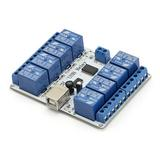
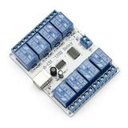

|
<< Click to Display Table of Contents >> Navigation: Other Programs > Relay Switching |

The Sainsmart 8-channel 12V Relay Module is compatible with RigPi. It is controlled from one of the Raspberry Pi USB ports using a standard USB A/B cable. It requires an external 12 V power supply.
The module can be purchased from Sainsmart, https://sainsmart.com
The relays are able to switch 28 VDC or up to 250 VAC at 10 amps.
There are several caveats...
▪When you power up the Raspberry Pi or reboot, the relays are toggled several times. According to Sainsmart, this is a characteristic of the FTDI chip used on the board.
▪Be careful when connecting a 12 V power supply to not reverse the polarity. There is no protection against reversed voltage on the board.
▪To control the Relay Module, select Macro Decimal or Band BCD in the Slv Cmnd drop down list. Set the Slave Port to the long name for the FTDI USB connection.
▪Each relay module can be controlled by any account.
▪You can use several relay modules, one per account. More than one FTDI USB cable can used for multiple relay boards or radios.
The relays can be toggled automatically in the BCD Band mode, or individually via macros in the Macro Decimal mode. You can also use a Flic switch to toggle relays. Macros for the Macro Decimal mode can be stacked, so !SW1-1!SW3-1 turn relays 1 and 3 on. !SW1-0!SW3-1 turns relay1 off and relay 3 on.
See the Advanced Radio topic for settings and the Flic topic for Flic programming instructions.